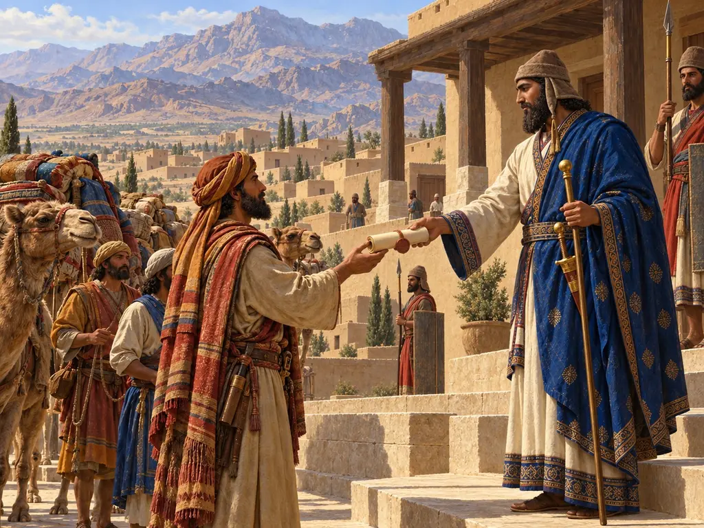
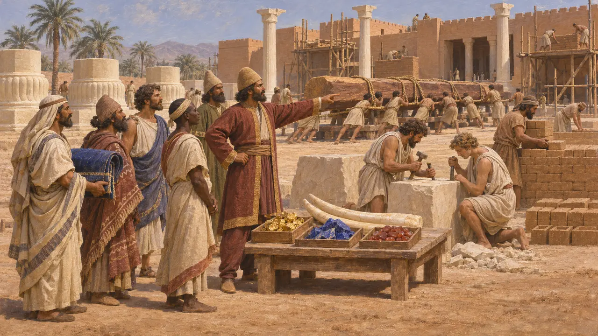
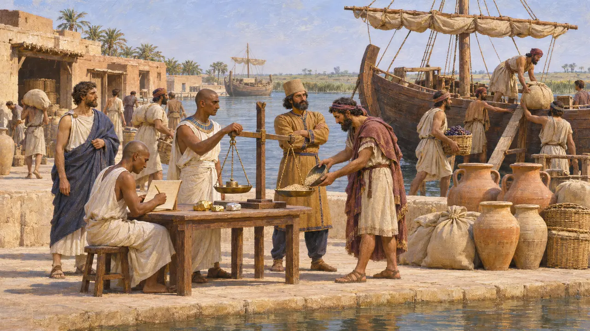
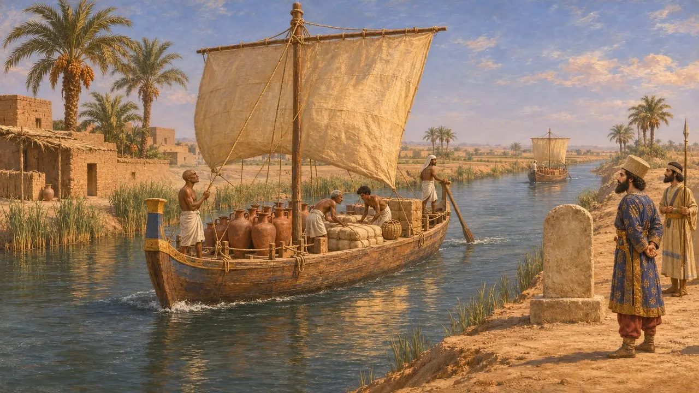
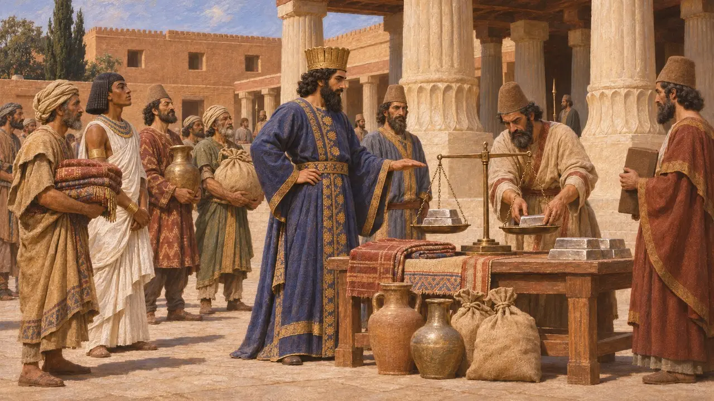
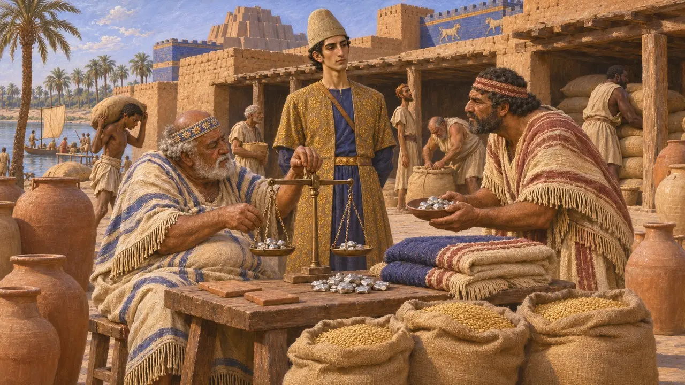

Торговая хартия
Царские пошлины, дань и торговля в Ахеменидской державе, ок. 530–479 гг. до н. э.
Никакой ахеменидский указ под названием «торговая хартия» неизвестен. Персидские цари получали товары из всех земель через дань, реквизиции и пошлины, а купцы передвигались по дорогам, рекам и морским путям, которые царская власть держала открытыми и облагала сборами. Сохранившиеся свидетельства рисуют государство, которое скорее извлекало выгоду из торговли, чем жаловало торговые привилегии.
В игре: Постоянное распоряжение на странице «Подати» в книге счетов ежемесячно обходится в серебро; взамен город платит за товары меньше и получает за них больше. Это игровое упрощение: надпись DSf перечисляет материалы и работников, отправленных в Сузы, а не торговые привилегии.

Что перечислено в Хартии Суз
Свидетельства эпохиХартия Дария об основании его дворца в Сузах называет доставленные для него материалы и народы, которые их привезли или обработали. Среди них — кедр из Ливана, золото из Сард и Бактрии, лазурит и сердолик из Согдианы, слоновая кость из Куша, Индии и Арахосии. Ионийцы и сардийцы тесали камень, а вавилоняне делали кирпичи. Текст прославляет власть Царя над подданными и свидетельствует о царских запросах, а не о свободной торговле.
DSf

Пошлины с кораблей, входящих в Египет
Свидетельства эпохиНа Элефантине сохранилась арамейская таможенная ведомость из Египта, стёртая и повторно использованная для записи повести об Ахикаре. Датированная 475 г. до н. э., одиннадцатым годом Ксеркса, она фиксирует ионийские и финикийские корабли, входившие в Египет, вероятно, в гавань близ одного из устьев Нила. Чиновники забирали часть каждого груза или установленные суммы золотом и серебром и записывали дополнительные выплаты в пользу царского дома. Это самое ясное свидетельство того, что корона систематически облагала налогом морскую торговлю.
Elephantine customs account (TAD C3.7); A. Yardeni, BASOR 293, 1994

Канал от Нила до моря
Свидетельства эпохиСтелы, воздвигнутые Дарием между Нилом и Красным морем, гласят, что он приказал прорыть канал и по нему затем ходили корабли из Египта в Персию. Геродот пишет, что начал канал фараон Нехо, а завершил Дарий, хотя Страбон и Диодор позднее утверждали, что Дарий оставил его недостроенным. Канал связал Египет морем с Персидским заливом. Он служил царским перевозкам и доставке дани по меньшей мере не меньше, чем частным купцам.
DZc; Herodotus 2.158

Дарий-торгаш
Античное свидетельствоГеродот пишет, что персы называли Кира отцом, Камбиса — владыкой, а Дария — торгашом. По его объяснению, Дарий получил это прозвище за то, что установил дань для каждой области и из всего извлекал выгоду. Прозвище могло быть греческой шуткой не меньше, чем персидской. Оно показывает, как чужеземцы смотрели на тщательное упорядочение доходов при Дарии.
Herodotus 3.89

Поощрял ли Царь торговлю
СпорныйВавилонские архивы, например архив семьи Эгиби, показывают, как при Кире, Камбисе и Дарии купцы вели дела с серебром, товарами и сбором налогов. Некоторые историки полагают, что корона поощряла обмен, поскольку пошлины и доходы в серебре шли ей на пользу. Другие подчёркивают, что в царском хозяйстве преобладали дань и натуральные выплаты, как видно по табличкам Персеполя. Не известно ни одного документа, жалующего торговые права городу или купцу.
P. Briant, From Cyrus to Alexander, 2002; M. Jursa, Aspects of the Economic History of Babylonia in the First Millennium BC, 2010
Источники
- DSf
- Elephantine customs account (TAD C3.7); A. Yardeni, BASOR 293, 1994
- Herodotus 2.158; 3.89
- DZc
- P. Briant, From Cyrus to Alexander, 2002
- M. Jursa, Aspects of the Economic History of Babylonia in the First Millennium BC, 2010